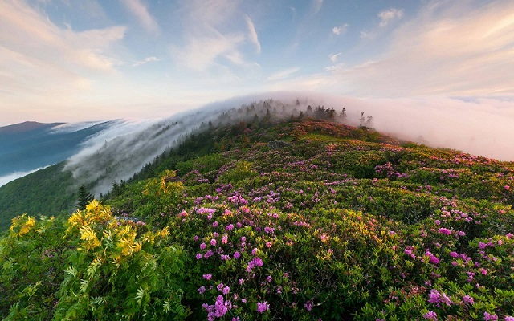

Franklin Breaks Record

Franklin is a city in Franklin County, Idaho, United States. The population was 641 at the 2010 census. It is part of the Logan, Utah-Idaho Metropolitan Statistical Area.
The town was founded by Mormon pioneers led by Thomas S. Smart on April 14, 1860 in what was then Washington Territory, although at the time it was believed the settlement was within the bounds of Utah Territory. The town was named for Franklin Richards, an Apostle for The Church of Jesus Christ of Latter-day Saints. Franklin is the first permanent European settlement in present-day Idaho. Its political status remained ambiguous until an 1872 survey determined the townsite was in Idaho Territory about 1-mile (1.6 km) north of the Utah Territory border. The area within the town limits was platted into square blocks in 1864.
Part of the 2004 comedy film Napoleon Dynamite were shot near Franklin. The chicken farm scenes were filmed on Ritewood Egg Farms property, and the supervisor's character is loosely based on Marlow Woodward, a late Franklin resident and one of the farm's founders.
Franklin is located at 42°0′58″N 111°48′11″W (42.016039, -111.803101).[8] at an elevation of 4,501 feet (1,372 m) above sea level.
According to the United States Census Bureau, the city has a total area of 1.29 square miles (3.34 km2), of which, 1.26 square miles (3.26 km2) is land and 0.03 square miles (0.08 km2) is water.